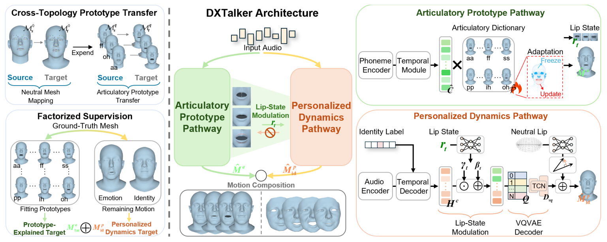

Submitted to AAAI
Speech-driven 3D facial animation often entangles shared articulatory patterns with identity-specific motion, making it hard to keep lip sync accurate while preserving expressive, personalized dynamics. DXTalker factorizes these two factors for more controllable and higher-quality animation.

The model learns shared articulatory prototypes that capture speech-related mouth and facial motion, while a separate personalized dynamics branch models identity-specific expression styles. Combining the two yields accurate lip synchronization and expressive facial motion across speakers.